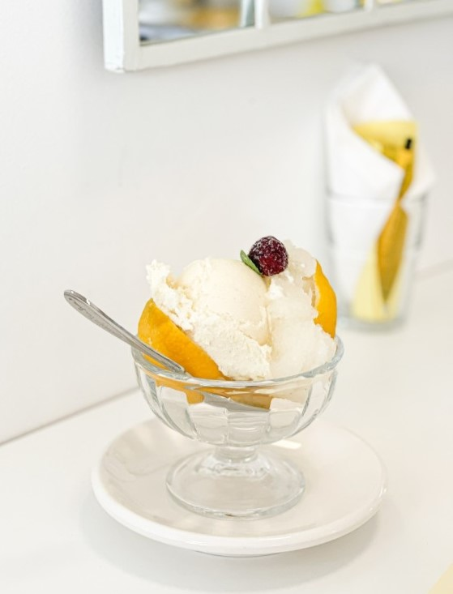
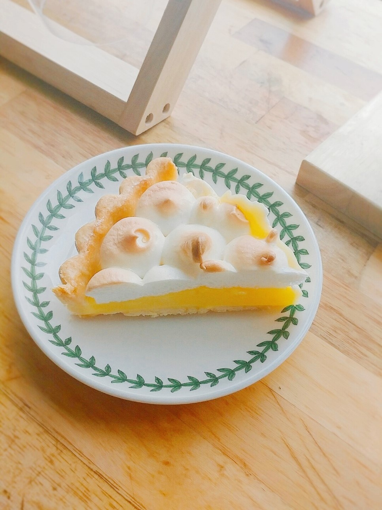

Bakery
레몬파운드케익 레몬소르베 레몬타르트

레몬파운드케익
부드럽지만 상큼 달달한
레몬 파운드 케익
레몬소르베
느끼함을 잡아주는 시원한 맛.
레몬 소르베

레몬타르트
홍차, 커피와의 단짝
레몬 타르트
레몬파운드케익
재료
버터 100g · 슈가파우더 100g · 소금 약간 · 바닐라슈가 약간
·
레몬제스트 5g · 계란 100g · 박력분 100g ·
베이킹파우더 5g
[레몬글라스]
슈가파우더 100g · 시럽 15g · 설탕 50g · 레몬즙 20g
레시피
① 부드럽게 풀어준 버터에 슈가파우더, 바닐라슈가, 레몬제스트를 넣어
섞어주고 계란을 조금씩 넣어가며 부드러운 크림 상태를 만든다.
② 체에 내린 박력분과 베이킹파우더를 넣고 섞어준 후 우유를 넣고
섞어준다.
③ 완성된 반죽을 틀에 팬닝해준다.
④ 180도로 예열된 오븐에 30분 구워준다.
④ 구운 파운드케익에 재료를 모두 섞음 레몬글라스를 발라준다.
⑥ 레몬글라스가 굳으면 레몬 파운드케익 완성!
레몬소르베
재료
플레인요거트 340g · 레몬즙 4.5스푼 · 설탕 3스푼 · 우유 300g
· 레몬제스트 약간 · 올리고당 70g
레시피
① 냄비에 우유와 설탕을 넣고 약불에서 은근하게 끓인 후 실온에서 식힌다.
② 레몬은 소다로 문질러 20분정도 물에 담궜다가 씻어준다.
③ 잘 씻은 레몬은 강판에 갈아 노란 껍질부분만 추출한다.
④ 끓여둔 액체에 레몬즙, 레몬제스트, 올리고당을 넣고 잘 섞어준다.
④ 냉동 가능한 용기에 담아 1시간에 한 번씩, 4회 정도 포크로 긁어가며 굳혀준다.
⑥ 상큼한 레몬 소르베 완성!
레몬파운드케익
재료
레몬 2개 · 레몬제스트 2개 · 설탕 90g · 계란 2개 ·
무염버터 60g · 소금 2g · 타르트지 2개 ·
[이탈리안머랭]
달걀흰자 70g · 설탕 20g
레시피
① 레몬 2개로 즙을 짜주고 레몬제스트를 만든다.
② 냄비에 레몬즙과 레몬제스트를 넣고 설탕, 소금,
계란을 넣고 중불에서 끓여준다.
③ 10분정도 끓인 후 불을 끄고 버터를 넣어 녹인다.
④ 구운 타르트지에 레몬 커드를 부어 준다.
④ 150도로 예열한 오븐에 10분간 구워준 후 식힌다.
⑥ 머랭을 올려준 후 토치로 그을리면 레몬타르트 완성!